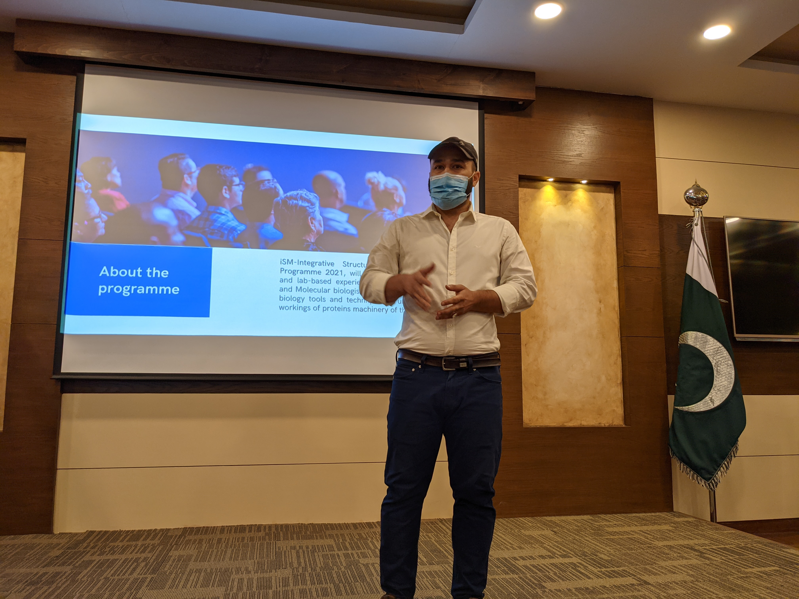
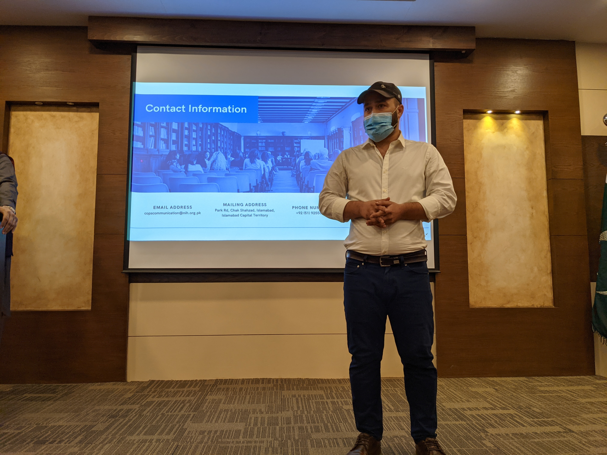

My talks and presentations in different workshops, trainings and webinars
While working at the National Institute of Health (NIH) during the COVID-19 pandemic from early 2020 through 2022, I trained and supervised multiple undergraduate and graduate students in performing research on protein structures, interactions, and dynamics
1) iSM-Integrative Structural and Molecular Biology Programme 2021

iSM-Integrative Structural and Molecular Biology Programme 2021 training organized at NIH
This workshop offered interdisciplinary training in applying structural biology techniques to elucidate cellular protein function. Capitalizing on technological advances to transform our understanding of protein mechanisms necessitates scientists fluent across natural sciences, structural biology, and molecular biology. The iSM Programme provided this cross-disciplinary education, equipping participants with versatile skills to thrive across biological disciplines.
Projects covered topics; SARS-CoV-2 diagnostics, primers designing, PCR, sequence analysis, Vaccine targets prediction, In-Silico vaccine designing, protein structure and function analysis, structure-based drug designing (SBDD), Virtual screenings, molecular modeling, protein structure quality assessments, Insilico pharmacokinetics, ADMET, lead optimization, drug-likeness, ligand-based structure similarity searching, and chemoinformatics to build virtual drug libraries for therapeutic purpose against infectious diseases.
Some clicks of the iSM 2021 📸:


